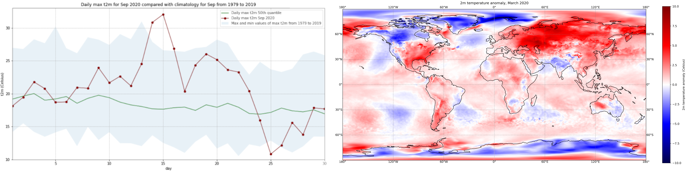

Copernicus Climate Change Service (C3S) Data Tutorials#
Discover how to access and handle data of the past, present and future climate!
This website contains Jupyter notebook based tutorials that demonstrate how to access and process the wide variety of climate data provided by the Climate Data Store (CDS) of the Copernicus Climate Change Service (C3S). Each tutorial provides interactive examples of common workflows to derive information about the past, present and future climate. They include code in Python and content in Markdown to provide clear, engaging and practical instructions on data handling which can be run in various cloud environments without any need for installation. You are invited to experiment with these tutorials and tailor them to your needs to extract results meaningful to you! The tutorials make use of climate data freely available on the CDS and accessed using an Application Programming Interface (API).

Target Audience#
The Jupyter notebooks provided by the Copernicus Climate Change Service (C3S) are designed for a diverse audience interested in climate data analysis. This includes climate scientists, researchers and data analysts seeking to understand and interpret climate data. Additionally, educators and students aiming to enhance their knowledge of climate data processing will find these tutorials beneficial.
Learning Objectives#
The primary objective of these Jupyter notebooks is to equip users with practical skills in accessing, processing, and analyzing climate data from the Climate Data Store (CDS). Through interactive Python programming examples, users learn to handle data pertaining to observations, reanalysis, seasonal forecasts and climate projections. The tutorials provide example workflows that can be tailored by users to suit their needs for climate data analysis.
New Tutorials#
We have a set of new tutorials waiting and ready to be explored.
Climate
Change
Service
C3S
(Tutorial)
![Image]
Climate
Change
Service
C3S
(Tutorial)
![Image]
Climate
Change
Service
C3S
(Tutorial)
![Image]